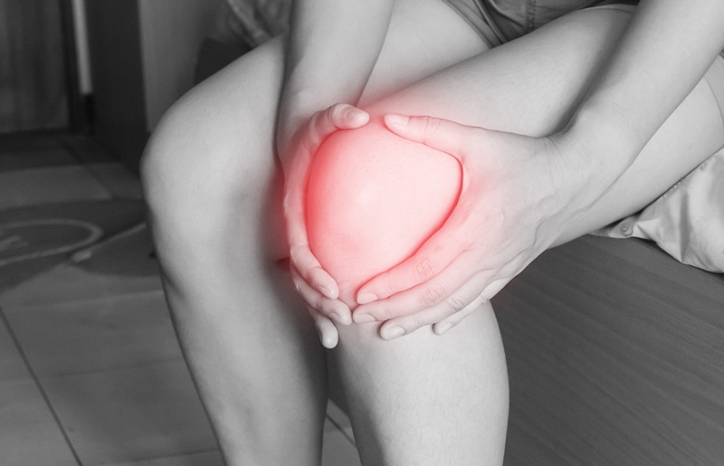

Articles
Feeling Beat Up after Workouts? How to Use Reps in Reserve (Correctly).

Would you rather listen to this article? Use the player below, download it, or use iTunes. One potential reason for feeling beat up after workouts is from pushing the intensiveness of the exercises too far. Done with many exercises for several consecutive workouts (or weeks of workouts), pushing each set to the near limit may lead to that “beat up” feeling. The trend I’ve noticed with some …
Read more
How to Get Back to Working Out after a Break
Would you rather listen to this article? Use the player below, download it, or use iTunes. Getting back into a workout routine can seem more challenging than starting one for the first time. Depending on how long the break from working out was, the results you worked so hard to achieve may have diminished; the momentum you built may have vanished. Rather than having “nowhere to go but up” …
Read more
Quick and Tasty Cookie Dough Dip Recipe
Raw cookie dough is not something I've been tempted to eat. Nor do I like cookie-dough flavored foods like ice cream. But this Cookie Dough Dip is mighty tasty. It's especially great when you want something on the sweet side but would rather not dive face first into a box of fried donuts. Not only is this delicious, but it does provide nutritional value: it's fiber rich (from the beans, dates, …
Read more
How to Deal with Negative Comments about Your Body
Would you rather listen to this article? Use the player below, download it, or use iTunes. We want others to find us attractive; we want to be desirable. We may even, perhaps, want them to be envious of our hard-earned, properly-placed curves we’ve achieved … or that we’re currently striving to achieve. Why? Why do we place value on other people’s opinions of our bodies? Why do we fear …
Read more
Learn to Lift: The Beginner Guide to Strength Training
Would you rather listen to this article? Use the player below, download it, or use iTunes. Whatever the reason you want to learn to lift -- lose weight, build a better-looking body, get strong, forge greater self-confidence, complement your sport, improve your health, to be able to outrun fellow Homo Sapiens should a zombie outbreak occur -- you’re in the right place. Depending on what …
Read more
How to Banish the Fear of Lifting Weights

Would you rather listen to this article? Use the player below, download it, or use iTunes. The gym is a place for every individual. No one is better than anyone else, and no one deserves to be there more than the person beside them. Lifting weights is an activity for everyone. But it may not always feel that way. Gym intimidation is a common issue. Many experience it the first time they …
Read more
Feel Like Your Back “Strains” from Deadlifts?
Has it ever felt like your low back was "straining" as you deadlifted the bar off the floor? The day after deadlifting, have you been left with battered and bruised shins? You’re likely making a very common mistake. And the great news? It’s incredibly easy to fix. This all-too-common mistake happens before you even wrap your hands around the barbell. The barbell is in the wrong position. …
Read more
Stop Telling Women to Earn Their Food
Would you rather listen to this article? Use the player below, download it, or use iTunes. ‘Tis the season for holiday cheer, all things pumpkin-spice, and perhaps a few too many spiked egg-nogs. Something else is supplied in abundance this time of year too: Guilt. Shame. Punishment. All for, get this, eating food. Scroll through social media and alongside tempting holiday recipes are …
Read more